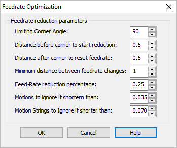

There may be times when you want your cutting tool to slow down when it reaches a sharp corner and then speed up again after the corner. We call this Feed Rate Optimization and it is available in the PRO configuration of each of our CAM plug-ins. Here are the steps to enable this functionality. You can also refer to our tech blog article here: Feed Rates Explained – Extend the Life of Your CNC Tools and Machines.
|
1.Generate your toolpath as you normally world.
|
2.Make sure you are satisfied with your toolpath (i.e., you have simulated the toolpath and are ready to post-process it to your CNC controller.
3.In the Machining Job tree expand the operation folder.
|
4.Double-click on the Toolpath icon to display the Toolpath Editor.
") Feedrate Optimization Icon (Toolpath Editor) |
5.From the Global Edits tab select the Feedrate Optimization icon.
This will display the Feedrate Optimization dialog shown below.
 Dialog Box: Feedrate Optimization |
6.Set your feedrate reduction parameters. Pay special attention to the following options:
Distance before corner to start reduction
Distance after corner to reset feedrate
Feedrate reduction percentage
7.Pick OK to close the Feedrate Optimization dialog.
|
8.Let's review what we did.
The Feeds & Speeds for the operation are as shown in this dialog. Feeds & Speeds tab of the 2 1/2 Axis Profiling operation. Now look at your Toolpath Editor and locate the first Cut motion. In our example it is on line 21 as shown below. Toolpath Editor with Cut Feed reductions Based on the toolpath Feeds & Speeds tab and selections made in the Feedrate Optimization dialog (shown above) we can see the following: •Our 2-1/2 Axis Profiling toolpath is cutting a 6" square profile. •On line 21 a MARKER is set to start the CUT feedrate (our dialog above has it set to 10 in/min). •On line 23 we see that the cutter is moved to X5.750000. (this is 0.25" before the first corner). •Then on line 24 we see that a FEED CHANGE of 0.25 is inserted. (this is the first feedrate reduction of 25%). •Then on line 28 the cutter has turned the first corner and goes to X6.250000 (this is 0.25" after the first corner). •Then on line 29, a FEED CHANGE is inserted to RESTORE the feedrate back to 100%. •The on line 31, the feedrate reduction begins again for the next corner. |
9.When we post the gcode file for the operation we can locate the feedrate reductions as shown below.
G-Code showing Feedrate Reductions |
10.Here is another example of Feedrate Optimization:
|
||||||||